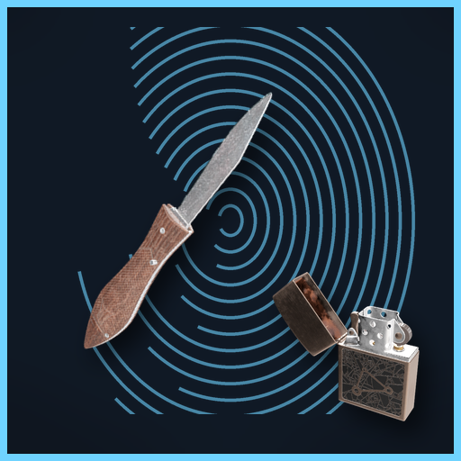

<- all projects

Latent
PC
Volume
Live
Night shift at the crime lab. Match prints, run DNA, line up bullets, testify.
It is the night shift at an understaffed city crime lab, detectives want a name by morning and your old teacher's most famous fingerprint match is about to be looked at again. Every case brings two or three exhibits, each with its own test: latent prints, DNA gels, ballistics, toxicology, fibres and blood spatter. Do the science, write the report, then defend it on the witness stand, where overstating your results costs as much as getting them wrong. There are 40 cases in five seasons, with a story about a lab director who closed cases with bad science, plus a daily backlog.